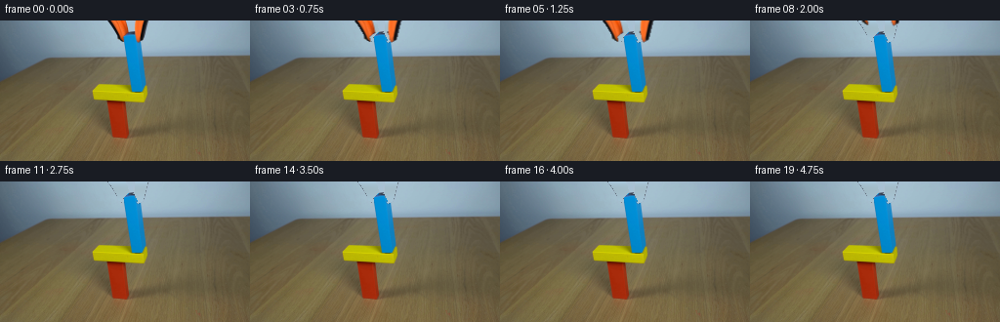
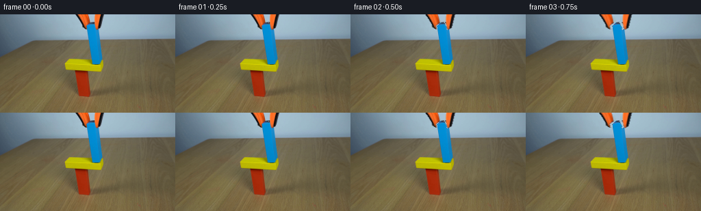

CODING AGENTS AS PIXEL WORLD MODELS
traex/GPT-5.6-Sol · 0183
点击播放 · 原生 RGB 像素
逐轮保存的候选
回放视频、检查图与代码变化。
每份候选均可单独播放。实际图片检查记录在下方工具轨迹中。
候选 01播放与检查图
点击播放 · 原生 RGB 像素


展开代码变化
--- 上一保存版本
+++ 本次保存版本
@@ -0,0 +1,129 @@
+"""Generate the locked-off block-and-grabber demonstration.
+
+The initial photograph already contains the balanced L-shaped support and the blue
+block at the instant it is set down. The continuation opens the two fingers of
+the orange/black grabber and withdraws it, leaving the blue block stationary.
+Only local pixel processing and analytic image compositing are used.
+"""
+from pathlib import Path
+import numpy as np
+from PIL import Image, ImageDraw
+from scipy.ndimage import gaussian_filter, binary_dilation, shift
+import artifact_io
+
+ROOT = Path(__file__).resolve().parent
+src_u8 = np.asarray(Image.open(ROOT / "first_frame.png").convert("RGB"), dtype=np.uint8)
+src = src_u8.astype(np.float32)
+H, W = src.shape[:2]
+Y, X = np.mgrid[0:H, 0:W]
+
+# Fit the very smooth blue-grey backdrop around the tool. A cubic surface gives
+# a clean plate which follows both the studio vignette and its vertical falloff.
+region = (Y < 39) & (X > 70) & (X < 191)
+blocked = ((X > 106) & (X < 154) & (Y < 29))
+# Exclude all distinctly coloured foreground pixels as well.
+r, g, b = src[..., 0], src[..., 1], src[..., 2]
+colour = (np.maximum.reduce([r, g, b]) - np.minimum.reduce([r, g, b]) > 48)
+use = region & ~blocked & ~colour
+xn = (X[use] - 130.0) / 70.0
+yn = (Y[use] - 18.0) / 35.0
+A = np.stack([np.ones_like(xn), xn, yn, xn*xn, xn*yn, yn*yn,
+ xn**3, xn*xn*yn, xn*yn*yn, yn**3], axis=1)
+xx = (X - 130.0) / 70.0
+yy = (Y - 18.0) / 35.0
+AA = np.stack([np.ones_like(xx), xx, yy, xx*xx, xx*yy, yy*yy,
+ xx**3, xx*xx*yy, xx*yy*yy, yy**3], axis=-1)
+sky = np.empty_like(src)
+for c in range(3):
+ coef = np.linalg.lstsq(A, src[..., c][use], rcond=None)[0]
+ sky[..., c] = np.sum(AA * coef, axis=-1)
+sky = np.clip(sky, 0, 255)
+
+# Extract the two independently moving fingers. Difference from the fitted sky
+# supplies naturally antialiased silhouettes; blue-dominant pixels are excluded
+# so the block never travels with the gripper.
+diff = np.sqrt(np.sum((src - sky) ** 2, axis=2))
+blue_dominant = (b > r + 22) & (b > g + 8)
+
+def finger_alpha(x0, x1, y1):
+ box = (X >= x0) & (X <= x1) & (Y <= y1)
+ core = box & ~blue_dominant & (diff > 24)
+ # Include the fine dark outline and orange edge pixels, but not backdrop noise.
+ core |= box & ~blue_dominant & (((r > g + 32) & (r > b + 27)) |
+ ((r < 105) & (g < 105) & (b < 105)))
+ grown = binary_dilation(core, iterations=1)
+ a = gaussian_filter(grown.astype(np.float32), 0.52)
+ # Preserve solid interiors while retaining subpixel boundaries.
+ a = np.maximum(a, np.clip((diff - 10.0) / 38.0, 0, 1) * box)
+ a *= box
+ a[blue_dominant] = 0.0
+ return np.clip(a, 0, 1)
+
+left_a = finger_alpha(108, 132, 22)
+right_a = finger_alpha(137, 151, 23)
+tool_a = np.maximum(left_a, right_a)
+
+# Remove the held tool to form the clean final frame. A slightly expanded mask
+# clears the dark/orange edge fringe left by the photographed fingers.
+clean_mask = gaussian_filter(binary_dilation(tool_a > .10, iterations=1).astype(np.float32), .58)
+clean_mask *= (Y < 25) & (X > 105) & (X < 154) & ~blue_dominant
+clean = src * (1.0 - clean_mask[..., None]) + sky * clean_mask[..., None]
+
+# Complete the few pixels on the block's top that were hidden between the jaws.
+# The measured block is a narrow, slightly perspective-skewed blue wooden prism.
+# Draw only where the gripper was removed; all originally visible blue texture is
+# retained pixel-for-pixel in the clean plate.
+model = Image.new("L", (W, H), 0)
+md = ImageDraw.Draw(model)
+md.polygon([(131, 12), (137, 13), (140, 20), (139, 22),
+ (127, 22), (127, 17)], fill=255)
+model_a = np.asarray(model, dtype=np.float32) / 255.0
+model_a = gaussian_filter(model_a, .38) * clean_mask
+# Subtle lateral shading sampled from the visible wood rather than a flat fill.
+blue_fill = np.zeros_like(src)
+for x in range(W):
+ q = np.clip((x - 127) / 14.0, 0, 1)
+ blue_fill[:, x] = np.array([3 + 12*q, 139 + 3*q, 213 - 5*q])
+# Preserve sky-toned highlights near the upper bevel.
+blue_fill *= (0.98 + 0.02 * np.clip((Y[..., None] - 12) / 10, 0, 1))
+clean = clean * (1.0 - model_a[..., None]) + blue_fill * model_a[..., None]
+clean = np.clip(clean, 0, 255)
+
+# Premultiplied layers prevent dark fringes during subpixel shifts.
+def moved_layer(alpha, dx, dy):
+ rgb_p = src * alpha[..., None]
+ kwargs = dict(shift=(dy, dx), order=1, mode="constant", cval=0.0,
+ prefilter=False)
+ aa = shift(alpha, **kwargs)
+ pp = np.stack([shift(rgb_p[..., c], **kwargs) for c in range(3)], axis=2)
+ rgb = pp / np.maximum(aa[..., None], 1e-6)
+ return rgb, np.clip(aa, 0, 1)
+
+# At 4 fps: pause for contact, open jaws for one second, then lift clear. Smooth
+# ease curves make the mechanical action read as real-time rather than a jump.
+def smoothstep(v):
+ v = np.clip(v, 0.0, 1.0)
+ return v*v*(3.0 - 2.0*v)
+
+frames = [src_u8.copy()]
+for i in range(1, 20):
+ t = i / 4.0
+ opening = smoothstep((t - 0.22) / 0.92)
+ lifting = smoothstep((t - 1.18) / 1.30)
+ # Fingers part by about 11 pixels overall before withdrawing above frame.
+ dx = 5.7 * opening
+ dy = -25.0 * lifting
+ lrgb, la = moved_layer(left_a, -dx, dy)
+ rrgb, ra = moved_layer(right_a, dx, dy)
+ out = clean.copy()
+ out = out * (1.0 - la[..., None]) + lrgb * la[..., None]
+ out = out * (1.0 - ra[..., None]) + rrgb * ra[..., None]
+ # Once fully gone, exact reuse of the clean plate gives a truly static setup.
+ if t >= 2.75:
+ out = clean.copy()
+ frames.append(np.clip(np.rint(out), 0, 255).astype(np.uint8))
+
+frames = np.stack(frames, axis=0)
+assert frames.shape == (20, 144, 256, 3) and frames.dtype == np.uint8
+assert np.array_equal(frames[0], src_u8)
+artifact_io.save(frames, ROOT)
可观测工具轨迹
实际执行的命令与返回图片。
命令 1exit 0
/bin/bash -lc "cat GENERATION_RULES.md && printf '\\n---PROMPT---\\n' && cat prompt.txt"
命令 2exit 0
/bin/bash -lc "find . -maxdepth 2 -type f -printf '%p\\n' | sort && printf '\\n--- dirs ---\\n' && find . -maxdepth 2 -type d -printf '%p\\n' | sort"
命令 3exit 0
/bin/bash -lc "python3 - <<'PY'
from PIL import Image
im=Image.open('first_frame.png')
print(im.mode, im.size)
import numpy as np
x=np.asarray(im)
print(x.shape,x.dtype,x.min(),x.max(),x.mean(axis=(0,1)))
PY"命令 4exit 0
/bin/bash -lc "python3 - <<'PY'
from PIL import Image
import numpy as np
x=np.array(Image.open('first_frame.png'))
# report coarse average colors on 8x8 tiles where colorful saturation or dark
for y in range(0,144,8):
out=[]
for xx in range(0,256,8):
a=x[y:y+8,xx:xx+8].mean((0,1)); mx=a.max(); mn=a.min(); sat=mx-mn
if sat>30 or mx<65: out.append(f'{xx:03},{tuple(a.astype(int))}')
print(f'y{y:03}:',' '.join(out))
PY"命令 5exit 0
/bin/bash -lc "python3 - <<'PY'
from PIL import Image
import numpy as np
from sklearn.cluster import KMeans
x=np.array(Image.open('first_frame.png')); H,W,_=x.shape
s=x.reshape(-1,3)
km=KMeans(14,random_state=0,n_init=5).fit(s[::3])
lab=km.predict(s).reshape(H,W)
for i,c in enumerate(km.cluster_centers_):
ys,xs=np.where(lab==i)
print(i, np.round(c).astype(int),len(xs),'bbox',xs.min(),ys.min(),xs.max(),ys.max(),'meanxy',round(xs.mean(),1),round(ys.mean(),1))
# ascii predominant block labels every 4x4 mapped sorted center
chars='0123456789ABCD'
for yy in range(0,H,4):
line=''
for xx in range(0,W,4):
q=lab[yy:yy+4,xx:xx+4].ravel(); i=np.bincount(q,minlength=14).argmax();line+=chars[i]
print(line)
PY"命令 6exit 0
/bin/bash -lc "python3 - <<'PY'
from PIL import Image
import numpy as np
x=np.array(Image.open('first_frame.png'))
# classify every 2x2 average
for y in range(0,34,2):
s=''
for xx in range(100,160,2):
a=x[y:y+2,xx:xx+2].mean((0,1));r,g,b=a
if b>g*1.35 and b>r*1.6 and b>120:c='B'
elif r>g*1.55 and r>b*1.5 and r>120:c='O'
elif max(a)<55:c='K'
elif abs(r-g)<20 and b<70 and r>100:c='Y'
else:c='.'
s+=c
print(f'{y:02}',s)
PY"命令 7exit 0
/bin/bash -lc "python3 - <<'PY'
from PIL import Image
import numpy as np
from scipy.ndimage import label
x=np.array(Image.open('first_frame.png'))
R,G,B=x[:,:,0],x[:,:,1],x[:,:,2]
for name,m in [('blue',(B>130)&(B>G*1.25)&(B>R*1.7)),('orange',(R>120)&(R>G*1.5)&(R>B*1.5)),('yellow',(R>120)&(G>100)&(B<60)&(abs(R.astype(int)-G.astype(int))<80)),('dark',(R<60)&(G<60)&(B<60))]:
l,n=label(m)
print('\\n',name)
for i in range(1,n+1):
yy,xx=np.where(l==i)
if len(xx)>=3:print(len(xx),(xx.min(),yy.min(),xx.max(),yy.max()))
PY"命令 8exit 0
/bin/bash -lc "cat artifact_io.py && python3 - <<'PY'
from PIL import Image
import numpy as np
x=np.array(Image.open('first_frame.png'))
# raw selected horizontal rows around gripper classes, chars at one px
def cls(a):
r,g,b=map(int,a)
if b>g*1.18 and b>r*1.45 and b>100:return 'B'
if r>g*1.3 and r>b*1.35 and r>90:return 'O'
if max(a)<70:return 'K'
if r>140 and g>155 and b>160:return 's'
return '.'
for y in range(0,27):
print(f'{y:02}', ''.join(cls(x[y,q]) for q in range(105,156)))
PY"命令 9exit 0
/bin/bash -lc "python3 - <<'PY'
from PIL import Image
import numpy as np
x=np.array(Image.open('first_frame.png'));R,G,B=x.transpose(2,0,1)
m=(B>110)&(B>G*1.18)&(B>R*1.4)
for y in range(10,31):
q=np.where(m[y])[0]
if len(q): print(y,q.min(),q.max(),len(q),np.round(x[y,q].mean(0)).astype(int))
# pixel rows RGB runs x110-151 at key
for y in [0,5,10,12,13,14,15,16,18,20,22,24]:
print('\\ny',y)
for st in range(110,151,5): print(st, np.round(x[y,st:st+5].mean(0)).astype(int),end=' | ')
print()
PY"命令 10exit 0
/bin/bash -lc "python3 - <<'PY'
from PIL import Image
import numpy as np
x=np.array(Image.open('first_frame.png'));R,G,B=x.transpose(2,0,1);m=(B>90)&(B>G*1.12)&(B>R*1.25)
for y in range(10,75):
q=np.where(m[y,120:155])[0]+120
if len(q): print(y,q.min(),q.max(),len(q))
PY"命令 11exit 0
/bin/bash -lc "cat > generate.py <<'PY'
\"\"\"Generate the locked-off block-and-grabber demonstration.
The initial photograph already contains the balanced L-shaped support and the blue
block at the instant it is set down. The continuation opens the two fingers of
the orange/black grabber and withdraws it, leaving the blue block stationary.
Only local pixel processing and analytic image compositing are used.
\"\"\"
from pathlib import Path
import numpy as np
from PIL import Image, ImageDraw
from scipy.ndimage import gaussian_filter, binary_dilation, shift
import artifact_io
ROOT = Path(__file__).resolve().parent
src_u8 = np.asarray(Image.open(ROOT / \"first_frame.png\").convert(\"RGB\"), dtype=np.uint8)
src = src_u8.astype(np.float32)
H, W = src.shape[:2]
Y, X = np.mgrid[0:H, 0:W]
# Fit the very smooth blue-grey backdrop around the tool. A cubic surface gives
# a clean plate which follows both the studio vignette and its vertical falloff.
region = (Y < 39) & (X > 70) & (X < 191)
blocked = ((X > 106) & (X < 154) & (Y < 29))
# Exclude all distinctly coloured foreground pixels as well.
r, g, b = src[..., 0], src[..., 1], src[..., 2]
colour = (np.maximum.reduce([r, g, b]) - np.minimum.reduce([r, g, b]) > 48)
use = region & ~blocked & ~colour
xn = (X[use] - 130.0) / 70.0
yn = (Y[use] - 18.0) / 35.0
A = np.stack([np.ones_like(xn), xn, yn, xn*xn, xn*yn, yn*yn,
xn**3, xn*xn*yn, xn*yn*yn, yn**3], axis=1)
xx = (X - 130.0) / 70.0
yy = (Y - 18.0) / 35.0
AA = np.stack([np.ones_like(xx), xx, yy, xx*xx, xx*yy, yy*yy,
xx**3, xx*xx*yy, xx*yy*yy, yy**3], axis=-1)
sky = np.empty_like(src)
for c in range(3):
coef = np.linalg.lstsq(A, src[..., c][use], rcond=None)[0]
sky[..., c] = np.sum(AA * coef, axis=-1)
sky = np.clip(sky, 0, 255)
# Extract the two independently moving fingers. Difference from the fitted sky
# supplies naturally antialiased silhouettes; blue-dominant pixels are excluded
# so the block never travels with the gripper.
diff = np.sqrt(np.sum((src - sky) ** 2, axis=2))
blue_dominant = (b > r + 22) & (b > g + 8)
def finger_alpha(x0, x1, y1):
box = (X >= x0) & (X <= x1) & (Y <= y1)
core = box & ~blue_dominant & (diff > 24)
# Include the fine dark outline and orange edge pixels, but not backdrop noise.
core |= box & ~blue_dominant & (((r > g + 32) & (r > b + 27)) |
((r < 105) & (g < 105) & (b < 105)))
grown = binary_dilation(core, iterations=1)
a = gaussian_filter(grown.astype(np.float32), 0.52)
# Preserve solid interiors while retaining subpixel boundaries.
a = np.maximum(a, np.clip((diff - 10.0) / 38.0, 0, 1) * box)
a *= box
a[blue_dominant] = 0.0
return np.clip(a, 0, 1)
left_a = finger_alpha(108, 132, 22)
right_a = finger_alpha(137, 151, 23)
tool_a = np.maximum(left_a, right_a)
# Remove the held tool to form the clean final frame. A slightly expanded mask
# clears the dark/orange edge fringe left by the photographed fingers.
clean_mask = gaussian_filter(binary_dilation(tool_a > .10, iterations=1).astype(np.float32), .58)
clean_mask *= (Y < 25) & (X > 105) & (X < 154) & ~blue_dominant
clean = src * (1.0 - clean_mask[..., None]) + sky * clean_mask[..., None]
# Complete the few pixels on the block's top that were hidden between the jaws.
# The measured block is a narrow, slightly perspective-skewed blue wooden prism.
# Draw only where the gripper was removed; all originally visible blue texture is
# retained pixel-for-pixel in the clean plate.
model = Image.new(\"L\", (W, H), 0)
md = ImageDraw.Draw(model)
md.polygon([(131, 12), (137, 13), (140, 20), (139, 22),
(127, 22), (127, 17)], fill=255)
model_a = np.asarray(model, dtype=np.float32) / 255.0
model_a = gaussian_filter(model_a, .38) * clean_mask
# Subtle lateral shading sampled from the visible wood rather than a flat fill.
blue_fill = np.zeros_like(src)
for x in range(W):
q = np.clip((x - 127) / 14.0, 0, 1)
blue_fill[:, x] = np.array([3 + 12*q, 139 + 3*q, 213 - 5*q])
# Preserve sky-toned highlights near the upper bevel.
blue_fill *= (0.98 + 0.02 * np.clip((Y[..., None] - 12) / 10, 0, 1))
clean = clean * (1.0 - model_a[..., None]) + blue_fill * model_a[..., None]
clean = np.clip(clean, 0, 255)
# Premultiplied layers prevent dark fringes during subpixel shifts.
def moved_layer(alpha, dx, dy):
rgb_p = src * alpha[..., None]
kwargs = dict(shift=(dy, dx), order=1, mode=\"constant\", cval=0.0,
prefilter=False)
aa = shift(alpha, **kwargs)
pp = np.stack([shift(rgb_p[..., c], **kwargs) for c in range(3)], axis=2)
rgb = pp / np.maximum(aa[..., None], 1e-6)
return rgb, np.clip(aa, 0, 1)
# At 4 fps: pause for contact, open jaws for one second, then lift clear. Smooth
# ease curves make the mechanical action read as real-time rather than a jump.
def smoothstep(v):
v = np.clip(v, 0.0, 1.0)
return v*v*(3.0 - 2.0*v)
frames = [src_u8.copy()]
for i in range(1, 20):
t = i / 4.0
opening = smoothstep((t - 0.22) / 0.92)
lifting = smoothstep((t - 1.18) / 1.30)
# Fingers part by about 11 pixels overall before withdrawing above frame.
dx = 5.7 * opening
dy = -25.0 * lifting
lrgb, la = moved_layer(left_a, -dx, dy)
rrgb, ra = moved_layer(right_a, dx, dy)
out = clean.copy()
out = out * (1.0 - la[..., None]) + lrgb * la[..., None]
out = out * (1.0 - ra[..., None]) + rrgb * ra[..., None]
# Once fully gone, exact reuse of the clean plate gives a truly static setup.
if t >= 2.75:
out = clean.copy()
frames.append(np.clip(np.rint(out), 0, 255).astype(np.uint8))
frames = np.stack(frames, axis=0)
assert frames.shape == (20, 144, 256, 3) and frames.dtype == np.uint8
assert np.array_equal(frames[0], src_u8)
artifact_io.save(frames, ROOT)
PY
python3 generate.py
python3 - <<'PY'
import numpy as np
from PIL import Image
z=np.load('pixels.npz')['pixels']
print('pixels',z.shape,z.dtype)
a=np.stack([np.asarray(Image.open(f'frames/{i:02}.png')) for i in range(20)])
print('frames',a.shape,a.dtype,'frame0 exact',np.array_equal(a[0],np.asarray(Image.open('first_frame.png'))))
for i in range(1,20):
print(i, np.count_nonzero(np.any(a[i]"'!=a[i-1],axis=2)), float(np.mean(np.abs(a[i].astype(float)-a[i-1]))))
PY'保存候选 1 份；完成命令 11 次；可验证图片返回 0 张。原始 API 响应与完整日志保留在本地。